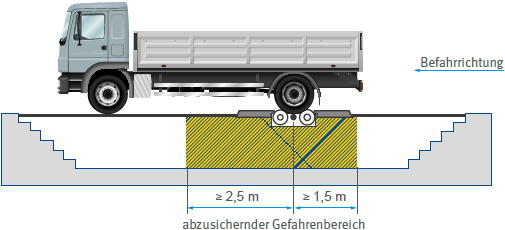

Rollen-Brems- und Rollen-Leistungsprüfstände finden mehr und mehr in Werkstätten Eingang. Die Gefahren gehen von den sich drehenden Rollen aus und von den Öffnungen, die sich zwischen den Rollen befinden, in die Personen hineintreten können. Diese Gefahren sind jedoch bei den neueren Rollen-Prüfständen durch die Bauart gebannt.
Eine andere Gefahr tritt bei Rollen-Bremsprüfständen auf, die mit geteilten Rollensätzen über Gruben eingebaut sind. Bei Betrieb des Rollen-Bremsprüfstandes ist es manchmal nötig, zum feinfühligen Einstellen der Bremsen Einstellarbeiten vorzunehmen. Dabei befinden sich die Beschäftigten in unmittelbarer Nähe der von den Rollensätzen angetriebenen Kardanwelle.
Bei solchen Einstellarbeiten an der Bremse wurden mehrfach Monteure von der sich drehenden Kardanwelle erfasst, um die Kardanwelle gewickelt und tödlich verletzt.
Um zu verhindern, dass sich solche Unfälle weiterhin ereignen, müssen Rollen-Bremsprüfstände mit Einrichtungen versehen sein, die einen Aufenthalt von Personen im Gefahrenbereich der Arbeitsgrube bei laufendem Prüfstand zwangsläufig unmöglich machen.
Der Gefahrenbereich erstreckt sich von der Mitte des Rollensatzes aus mindestens 2,5 m in Richtung aufsteigender Gelenkwelle und in Gegenrichtung mindestens 1,5 m weit in der Arbeitsgrube (Abbildung 14-1).

Abb. 14-1 Gefahrenbereich bei Arbeitsgruben mit Rollen-Bremsprüfstand
Von den Herstellern der Rollen-Bremsprüfstände sind solche Einrichtungen entwickelt worden. Befindet sich eine Person im Gefahrenbereich, schaltet der Prüfstand ab. Er kann nur durch einen bewussten Steuerbefehl bei freiem Gefahrenbereich wieder eingeschaltet werden.
Bei besonders langen Fahrzeugen, bei Fahrzeugen mit Allradantrieb oder bei beidseitig befahrbaren Rollen-Bremsprüfständen ist der Gefahrenbereich größer. Die Schutzeinrichtung muss entsprechend größer ausgelegt werden.
Neue Rollen-Bremsprüfstände in Verbindung mit Arbeitsgruben müssen mit einer dieser Schutzeinrichtungen eingebaut werden. Bestehende Rollen-Bremsprüfstände sind unverzüglich nachzurüsten.
Bestehende Rollen-Bremsprüfstände sind unverzüglich nachzurüsten.